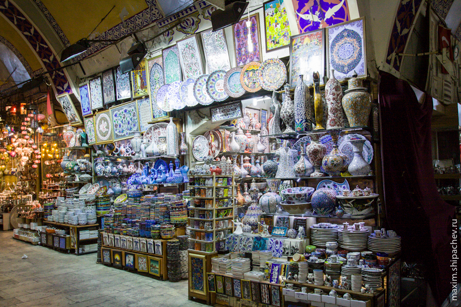
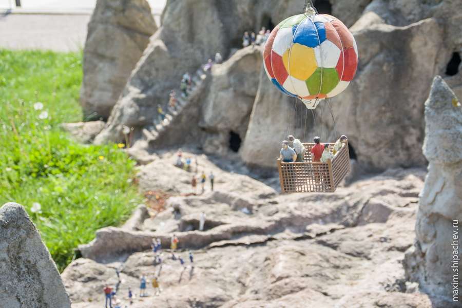

Из-за смены места жительства мы оказались недалеку от большинства стамбульских достопримечательностей, поэтому день решили начать с посещения Гранд Базара — одного из самых крупных крытых рынков мира. Справочники говорили о том, что это целый город внутри города, с целыми улицами, на которых расположены тысячи магазинов, ресторанами и даже мечетями. Как пройти мимо такого чуда, если ты приехал из страны где все в основном торгуют? От нашей гостиницы до Гранд Базара около километра. Правда в горку, правда по булыжной мостовой (


Разница часовых поясов всё ещё даёт о себе знать, следовательно мы приходим к ещё закрытому Гранд Базару. Сам крытый рынок открывается в 9 часов утра и у нас есть ещё минут 40, чтобы перекусить и осмотреть окрестности.
В окрестностях не находим ничего интересного, рынок окружён какими-то магазинчиками с ассортиментом, похожим на ассортимент рынка «Колос» Тем временем ворота открываются.
Проходим внутрь рынка

Рынок только открылся, сонные продавцы спешат в свои магазинчики, торопятся вымыть полы.



В общем, не вдохновляемся — обычный рынок, только большой, идём на выход. По краям Гранд Базара уже натуральный «рынок Колос».
Временное помутнение сознания + дух базара, и вот мы уже купили поддельные наушники Monster Beats за 650 рублей (настоящие стоят тысяч 10). Подделка перестала работать уже вечером.

По ощущениям (и карте) где-то недалеко есть ещё один, так называемый Египетский базар. Идём сквозь череду уличных «бутиков» на поиски.

Одни источники говорят, что базар назван Египетским потому, что был построен на налоги, которыми облагались товары из этой страны. Другие — потому, что пряности в Стамбул везли именно из Египта. Другое название базара, кстати, Базар Пряностей. Их тут действительно очень много, а ещё разного рода масел, орехов, сладостей. Мы ничего не купили, но нам понравилось!


Пройдя от гостиницы чуть более двух километров оказываемся вблизи уже знакомого Галатского моста. У входа в Гранд Базар туристы развлекаются тем, что кормят голубей. Местные жители развлекаются тем, что кормятся за счёт туристов, продавая им корм для голубей.

Вам тоже надоели полуоткрытые мусорные баки, из которых плохо пахнет, и которые так любит раздувать ветер? В Стамбуле этот вопрос решают в том числе так.

Тут я беру навигацию в свои руки и веду экипаж к станции метро, откуда, как мне кажется, мы доедем с пересадкой до знаменитого парка миниатюр, который так и называется Миниатюрк. Парк достаточно знаменит. В нём собраны практически все архитектурные достопримечательности Турции в масштабе 1:25. Непременно стоить посетить ведь.

Метров через 500 я понимаю, что мы идём к станции метро, которая пока не построена ( Разворачиваемся. Заодно вспоминаем, что перед Миниатюрком неплохо было бы ещё раз посетить Музей современного искусства (он нам телефон должен). До трамвая идём пешком.

Едем на трамвае до музея. В музее всё проходит довольно спокойно. Находят администратора, та просит разблокировать телефон ввведя пин-код. У них может фишка такая блокировать телефоны? Телефон не заблокирован, поэтому в качестве доказательства просто звоню на него. Заполняю какую-то форму, указываю свой телефон, адрес. Даже шучу «Will you send me the postcard?» (Я всегда шучу, когда говорю на английском). Телефон с нами, возвращаемся на трамвае. Мне кажется, я понял маршрут до Миниатюрка. Нам нужно ехать до остановки Топкапы, а там пересесть на метробус (что это, пока не знаем, думаем это какое-то метро). Доезжаем до Топкапы. Выйдя из трамвая, обнаруживаем, что мы в довольно-таки приличном парке, где отдыхают турецкие женщины со своими детьми. Отдохнём и мы.


Остановка Топкапы это такой приличный в Стамбуле транспортный узел. Здесь сходятся маршруты двух трамвайных линий и загадочного пока метробуса.
К счастью на другую трамвайную линию мы не сели, а пошли по навигатору искать метробус. Оказалось это не совсем трамвай. Метробусом в Стамбуле называют автобус, который движется по выделенной полосе, как мы уже привыкли, а по физически выделенной полосе. Метробусы даже не могут обогнать друг друга. В совокупности с отстутствием перекрёстков такая технология делает метробусы довольно скоростным и вполне комфортабельным транспортом. Ездят быстро и часто. Жетоны не продаются, покупаем разовые акбили.
На метробусе пересекаем по мосту бухту Золотой Рог и, ориентируясь на навигатор, промахиваемся остановкой. Расстояния между остановками довольно большие. Не проблема, пересаживаемся на встречный метробус не сходя с платформы, а значит бесплатно и… промахиваемся ещё раз — двери на нашей остановке почему-то не открылись (может быть нужно было кнопку нажать, я не успел понять). Не проблема, пересаживаемся вновь. Доезжаем до остановки Halıcıoğlu. Выходим. До нужного нам Миниатюрка около трёх километров. Светит солнце. На карте планируется, что дорога пройдёт вдоль бухты Золотой Рог, решаем идти пешком.
Проходим километра полтора и, к сожалению, упираемся в тоннель. Тоннель может быть и хорош для автомобилей, но для пешеходов приспособлен мало.

То, что мы сначала приняли за пешеходную дорожку было, вероятно, попросту ограждением для автомобилей. Идём за этим ограждением. Коляска не помещается по ширине, поднимаю её над собой, хорошо всё-таки, что я с сентября хожу в кружок любителей штанги. Запах выхлопных газов, мчащие на расстоянии вытянутой руки автомобили, многократно усиленный акустикой тоннеля шум машин — всё это делает впечатления от путешествия незабываемыми.

Длина тоннеля метров 200. Преодолеваем их на одном дыхании.

Сразу пересекаем дорогу и входим наконец в парк на берегу бухты Золотой Рог.

До Миниатюрка остаётся метров 800. В парке на территории около 6 гектаров собраны более 100 миниатюр турецких архитектурных достопримечательностей. Модели выполнены с высокой степенью детализации, погулять было интересно. Большинство достопримечательностей я видел впервые, поэтому на фотках то, что видели удалось опознать.



Сына в Миниатюрке отправили ещё в виртуальное вертолётное путешествие над Турцией
Дочка, пока сын «летал» над Турцией, успела подружиться с пингвином


Предыдущий маршрут нам уже ивестен, решаем возвращаться в Султанахмет как-то иначе. Пользоваться такси ума много не надо, поэтому пробуем освоить автобус. Акбиля (местного проездного) у нас всё ещё нет, а для автобуса он нужен. Спрашиваю у продавца калачей маршрут до Султанахмета, тот говорит маршрут, заодно выражает готовность посадить нас в автобус по своему акбилю. Это у них вобще там такой мелкий бизнес есть. Проезд по проездному на треть дешевле, вот эту треть такие продавцы у остановок и получают в качестве прибыли.

Возвращаемся на автобусе в Султанахмет, потом гуляем ещё километра 2 до гостиницы.

Завтра планируется очередной переезд. Решаем ничего не бронировать, а искать своими ногами.